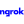
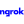

Baris PINAR
Software Developer
Software Developer
I have over a year of experience as a junior software engineer with Python, Java, and AWS technologies. I recently graduated from TED University with a Bachelor’s Degree in Computer Engineering. My strong interest and passion for the software sector helped me to get some experiences while I was studying at college.,
I have over a year of experience as a junior software engineer with Python, Java, and AWS technologies. My primary goal is to apply my technical expertise throughout the entire software life cycle to ensure the production and delivery of products and services that meet client specifications. Along with a competent software development team, and with strong personal knowledge, skills, and experience in software engineering, I am fully positive that this goal can be achieved. I recently graduated from TED University with a Bachelor’s Degree in Computer Engineering. My strong interest and passion for the software sector helped me to get some experiences while I was studying at college.


I started to work at Neurocess Limited company as a Software Developer. Neurocess is a London based start-up company that helps me to get experience about Python, JavaScript, AWS and Linux servers.
My second internship was at Ante Grup company as a Unity Content Developer. I successfully built a WPF-based desktop application that builds Unity scenes according to user inputs and the company still uses this project.
My first experience was at JotForm company as a back-end developer intern and I managed to build a chat-bot system that creates forms according to user demands on Telegram.
After taking a part as a mentor in the TED University. I promoted to the Lead Mentor position which manages and organizes mentors. The duration of this program was 1 year (2 term) and I got certificate of appreciation at end of the program from TED University
I was a mentor which presents the TED University to the newcomer students. The duration of this mentorship program was 1 year (2 term). I got certificate op appreciation at end of the program from TED University.
YGA is one of the biggest Science and Technology organization which aims to develop life-saver systems on Turkey
As 8 years of a professional swimmer, I started to work as a Swimming trainer in Haci Sabanci Swimming Pool during 2nd year of my University
We managed to build a system that predicts fatigue ratio according to EMG signal data with ML models. Moreover, the system was also use AWS services such as; Lambda functions , API Gateway , DynamoDB, S3 and Step machines. We tried to built our project as a company product because this project was sponsored by Neurocess Limited and they wanted to share this system with their customers.
After my graduation from TED university, I decided to build a website for increasing my knowledge about HTML,CSS and JS languages.


The Unity Developer team had a time issue when I was a intern at Ante Grup. They were losing so many times while building same scenes with different models and animations. Therefore I decided to built an desktop application (WPF) which imports 3D models and prepare model animations according to user selections on Unity.
I successfully built a Telegram-based Chatbot system which users can create their forms on Telegram with their JotForm account. Moreover, users can share their forms with other users on Telegram and users can fill these forms with the chatbot.

 

Used Selenium and Beautifulsoup libraries in Python for data extraction. Used regular expressions for data cleaning such as removal of urls and tags from tweets. Performed lemmatization and stop word removal on tweets for pre-processing. Implemented tf x idf and Gini index as feature selection methods to perform seniment analysis on tweets. Lastly, performed classification with SVM and random forest.